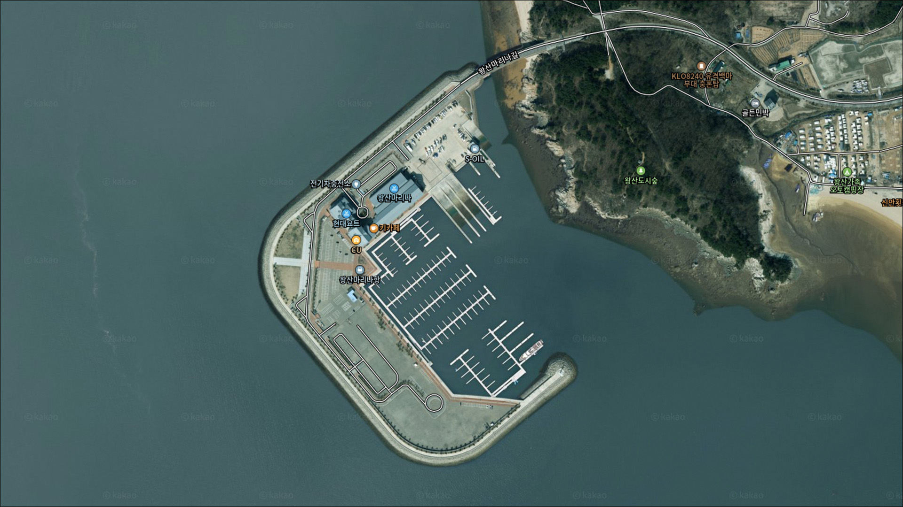
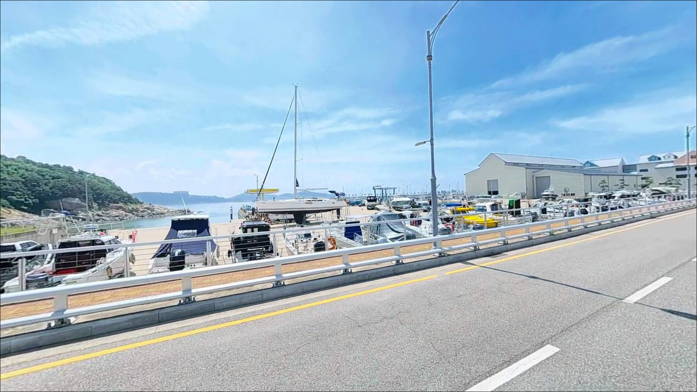
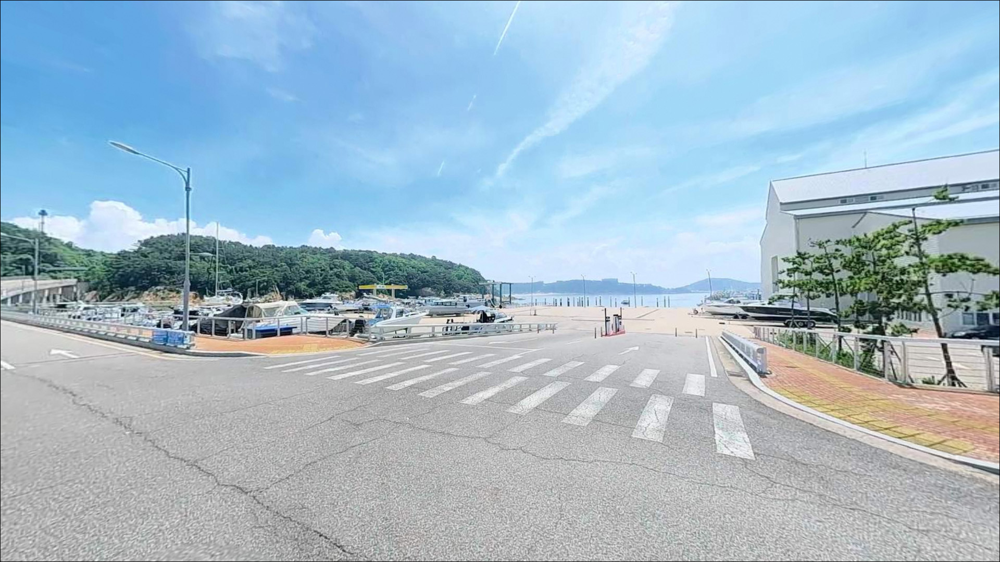
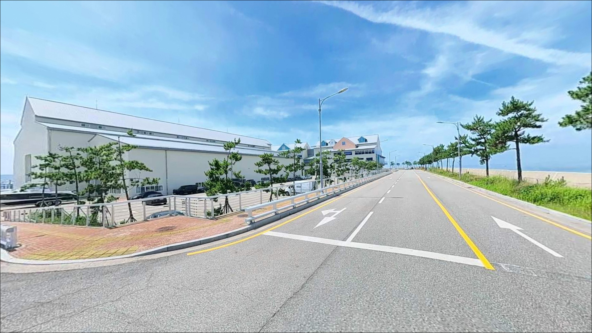
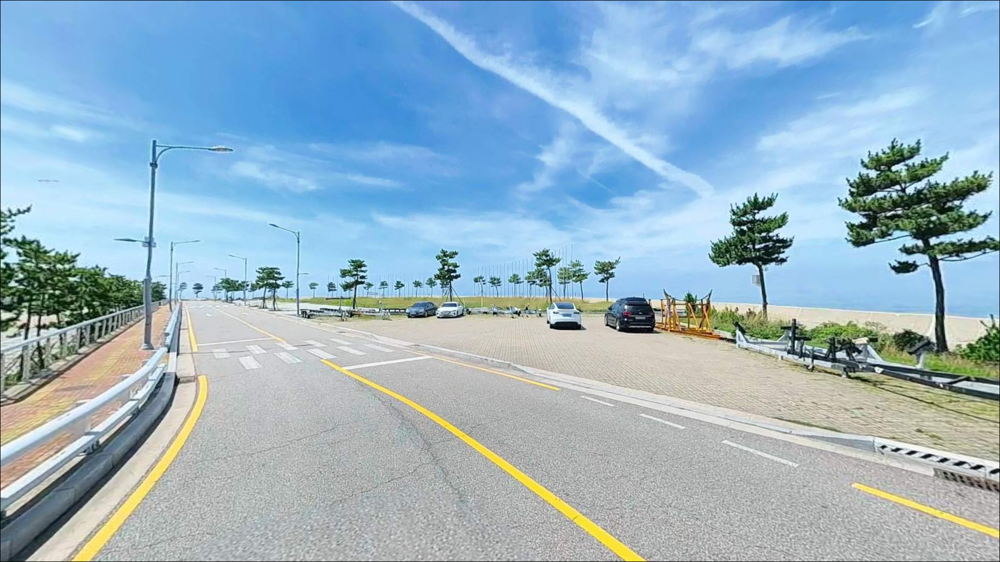
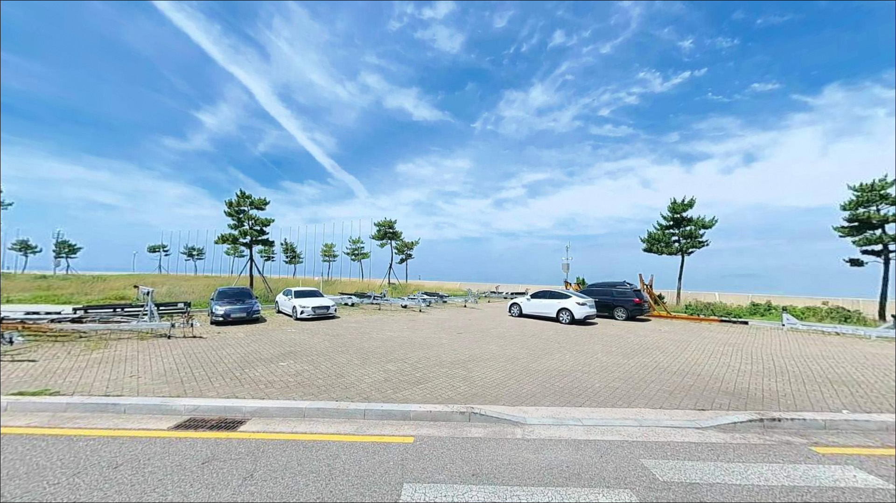
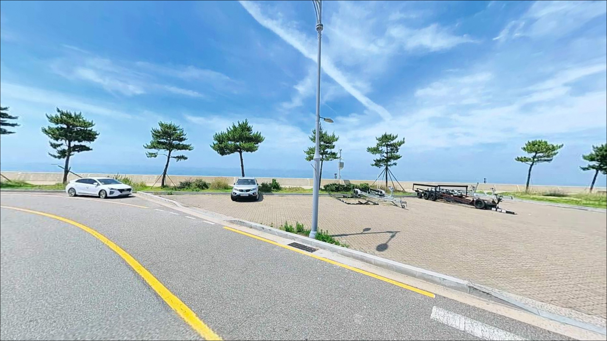
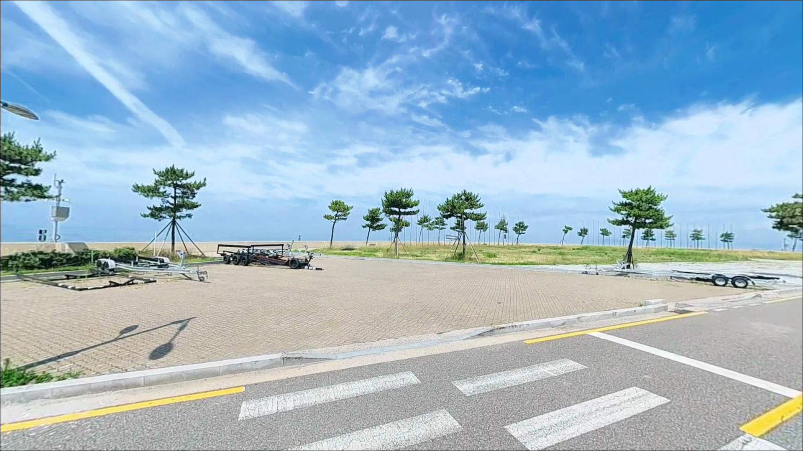
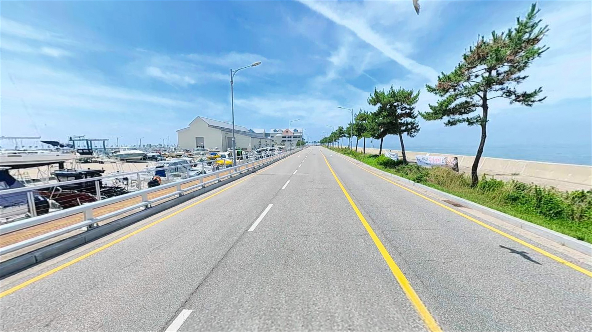

이 페이지에는 광고(제휴 링크 포함)가 있으며, 광고 링크를 통해 구매하면 운영자가 판매 수익 또는 수수료를 받을 수 있습니다. 포인트 사진: 카카오맵 스카이뷰·로드뷰. 이 페이지의 지도·사진 이미지는 카카오맵의 실제 서비스 이미지와 다를 수 있습니다.

왕산마리나항
인천 중구 을왕동 980-1
왕산마리나 시설 구역 내에서는 어패류 포획·채취 행위가
운영 규정상 허용되지 않습니다.
이를 모르고 방파제 쪽으로 채비를 꺼내면
그 자리에서 제지를 받을 수 있습니다.
이 글은 왕산마리나항 인근의
실질 낚시 포인트 위치, 물때 진입 조건,
낚시 스타일별 공략 방식과
차박 거점 활용 여건에 집중합니다.
시설 내 낚시 허용 여부나 조황 단정은
이 글의 범위에 포함되지 않습니다.

왕산마리나항은 영종도 서쪽 을왕동 끝자락에 위치하며,
왕산해수욕장 뒤편 오르막 포장도로를 따라 진입하는 구조입니다.
승용차·SUV 기준 진입에 어려운 구간은 없는 편이고,
마리나 시설 내부는 도로 폭이 넓어
대형 차량의 회차도 무난한 수준입니다.
낚시를 목적으로 한다면
마리나 시설 주차장보다
왕산가족오토캠핑장 인근 주차 구역이
갯바위 접근 동선상 더 가깝습니다.
왕산마리나 맞은편 갯바위는
주차 후 도보로 이동해야 하는 구조이며,
진입로 자체가 물때에 따라 잠기는 구간이
포함되어 있어 사전 물때 확인이 먼저입니다.
왕산마리나 시설 구역 내 낚시는 허용되지 않으며,
실질적인 낚시는 마리나 인근 갯바위 구간에서
이루어지는 점을 출발 전 반드시 염두에 두어야 합니다.

왕산마리나 주변은 관광지 성격이 강한 지역입니다.
시설 조명이 있어 야간에도 주변이 어둡지 않고,
을왕리·왕산 해수욕장 상권과 인접해 있어
완전한 노지 감각의 차박을 기대하기는 어렵습니다.
낚시 후 하룻밤 머무는 용도라면
마리나 주차장보다 왕산가족오토캠핑장을
사전에 확인하는 편이 더 안정적입니다.
서해 외항에 직접 노출된 구조라
바람이 강하게 부는 날은
체감 바람이 강한 환경이 될 수 있습니다.
차박 메인보다는 낚시 출조 거점 성격에
더 잘 맞는 입지입니다.
을왕리·왕산 상권에서 식사와 보급이 가능하고,
영종도 공항 방면으로 이동하면 주유소도 있어
편의 인프라 접근성 자체는 높은 편입니다.

왕산마리나 반경 3km 이내에는
을왕리해수욕장과 왕산해수욕장 상권이 포함됩니다.
식당·카페·편의점이 이 구간에 집중되어 있어
식사와 기본 보급은 가까운 거리에서 해결할 수 있습니다.
주유소는 을왕동 일대보다
영종도 내 공항 방면 주요 도로 선상에 있는 편이라
이동 전 미리 주유해두는 것이 편합니다.
낚시 소품과 얼음은 출발 전 준비해두는 것이
현장 이동을 줄이는 방법입니다.
갯바위 포인트 주변에는 별도 시설이 없으므로
완전 자급 기준으로 진입하는 것이 기본입니다.

이 포인트에서 가장 먼저 확인해야 할 것은 물때입니다.
서해는 조차가 크고,
을왕동 갯바위는 만조 시 진입 자체가 막히는 구간이 있습니다.
바다타임에서 을왕리 기준 물때를 확인하고,
중썰물 이후 저조 전후를 노려
출발 시각을 맞추는 것이 기본 전략입니다.
들물이 빠르게 진행되면 진입로가 물에 잠기는 구간이 있어
철수 타이밍도 미리 계산해두어야 합니다.
채비는 지그헤드·그럽웜·에기를 중심으로 준비하되,
갯바위 특성상 밑걸림이 발생하는 경우가 있으니
여분 채비를 충분히 챙기는 편이 좋습니다.
야간 진입 시에는 헤드랜턴과 갯바위화가 필수이며,
구명조끼는 갯바위 낚시의 기본 안전 장비입니다.
마리나 시설 내부는 낚시 불가 구역이므로
채비를 꺼내지 않도록 주의해야 합니다.
최신 조황은 출조 전에 반드시 검색해 보시기 바랍니다.

왕산마리나 맞은편 갯바위는
콧부리 구조로 조수 흐름의 영향을 크게 받습니다.
만조 때는 진입로 자체가 물에 잠겨
접근이 불가능한 상황이 됩니다.
중썰물 이후 드러나는 갯바위 구간이
실질적인 입장 타이밍이며,
들물이 차오르기 시작하면 철수 시간을 계산해야 합니다.
서해 갯바위 포인트에서 물때를 무시한 진입 시도는
철수 경로 차단으로 이어질 수 있습니다.
바다타임에서 을왕리 기준 조석 정보를 확인하고,
사리보다는 조금 전후 타이밍이
조류 세기 면에서 채비 컨트롤에 유리한 편입니다.
갯바위 주변 수심은 전반적으로 깊지 않으며,
조류가 흐르는 구간과 잔잔한 구간이 함께 형성됩니다.
암초 구조물 주변에 어류가 집결하는 패턴이 있어,
갯바위 끝단 콧부리 쪽이
루어 반응이 살아나는 자리입니다.
최신 조황은 출조 전에 꼭 검색해 보시기 바랍니다.

이 포인트에서 가장 어울리는 낚시는 루어낚시입니다.
루어낚시란 인조 미끼를 사용해
광어·우럭·농어 등 육식성 어종을 유인하는 낚시 방식입니다.
갯바위 암초 주변에서 지그헤드+그럽웜 조합은
우럭을 노리기에 잘 맞는 채비이며,
미노우 플러그로 갯바위 콧부리 주변을 탐색하는
방식도 유효한 편입니다.
에깅 계열도 시도해볼 만한 스타일입니다.
갑오징어 에깅이란 에기를 사용해
갑오징어를 노리는 루어낚시 방식입니다.
서해 영종·용유도권 갯바위에서
가을 시즌을 중심으로 갑오징어·주꾸미 조과가
기대되는 해안선 패턴에 속합니다.
9~11월 시즌에는 에기를 함께 준비하는 편이
복합 공략에 유리합니다.
원투낚시도 병행이 가능합니다.
조류가 느려지는 정조 타이밍에
채비를 멀리 보내 뻘·모래 혼합 지형을 탐색하면
망둥어와 붕장어를 노릴 수 있는 조건입니다.
낮보다 야간에 입질 빈도가 올라가는 경향이 있어
야간 원투도 함께 고려해볼 만한 스타일입니다.

왕산마리나 맞은편 갯바위에서
자리가 여의치 않거나 물때가 맞지 않을 때는
을왕리 선녀바위·거북바위 갯바위가
가장 먼저 꺼내볼 대안입니다.
선녀바위 공영주차장을 이용한 뒤
도보로 진입하는 구조이며,
광어·우럭·갑오징어·주꾸미를
노릴 수 있는 갯바위 포인트입니다.
을왕리 선착장도 대안으로 꺼낼 수 있습니다.
간조 때도 물이 완전히 빠지지 않아
낚시 가능 시간이 상대적으로 긴 편이며,
야간 원투낚시 포인트로 알려진 곳입니다.
왕산교 북측방조제 방면도
숭어와 장어를 노리는 원투 포인트로
차로 5~10분 이내 이동 가능한 거리입니다.
차박 중심 플랜B로는 왕산가족오토캠핑장이
가장 인접한 공식 야영 공간입니다.
사전 예약 여부를 확인하고 방문하는 것이
현장에서 당황하지 않는 방법입니다.

루어낚시나 에깅을 즐기는 낚시인이라면
왕산마리나 인근 갯바위 구간은
충분히 탐색 가치가 있는 포인트입니다.
암초 지형과 서해 조류 흐름이 맞물리는 구조에서
우럭·광어·갑오징어를 복합 공략할 수 있는
해안선이기도 합니다.
다만 마리나 시설 내 낚시 금지 원칙,
물때에 달린 갯바위 진입 조건,
관광지 인접에서 오는 야간 분위기는
방문 전 반드시 인지해야 할 기준입니다.
물때 확인, 진입 타이밍 계산, 여분 채비 준비,
이 세 가지를 갖추고 출발한다면
기억에 남는 갯바위 출조가 될 수 있습니다.
낚시를 마치고 을왕리 해변 쪽에서 하룻밤 머무는
차박 여행자라면,
공식 야영지 예약 여부만 미리 확인해두면
낚시와 차박을 함께 즐길 수 있는
수도권 접근성 좋은 서해 출조가 됩니다.